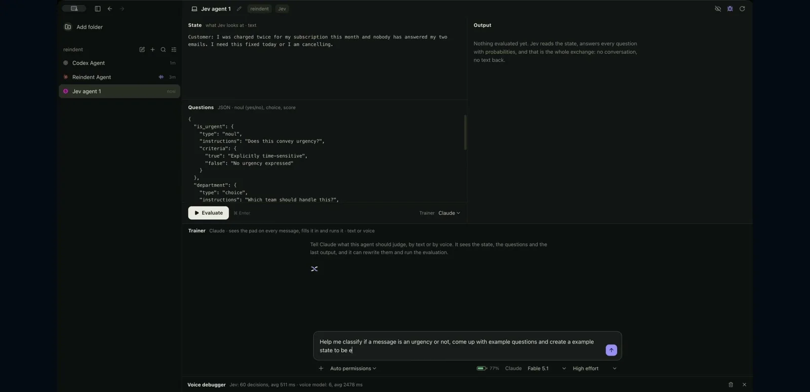
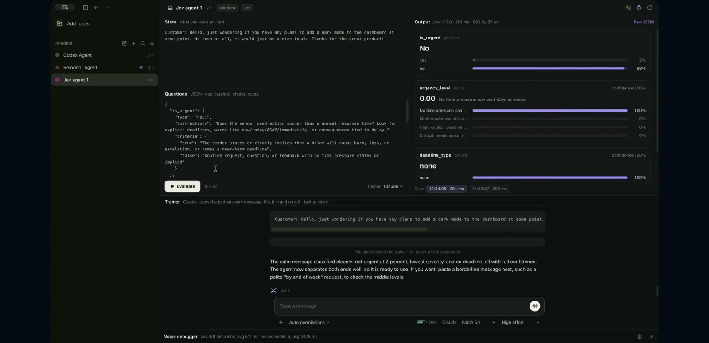

体験
Jevの契約（状態と質問を入れ、確率が返る）を、画面の説明文と配置でそのまま見せている。判断は文章ではなく構造化された出力として並び、チャットのような応答にはならない。
- 質問のJSONと、返ってきた確率が同じ画面に並ぶため、質問を書き換えて再実行する試行錯誤がしやすい。
- 生成モデル（Trainer）が質問を作り、Jevが判断する、という役割分担が明示されている。
- 下端の Voice debugger は、聞き取り、Jevの判断、アプリの操作を時系列で残す。見出しには「Jev: 60 decisions, avg 511 ms」と出る。
- 穏やかな要望の例で、is_urgent が 2% / 98% に、urgency_level と deadline_type が confidence 100% に振り切れている。極端な値は、誤りにくい入力だからか、表示上の丸めかは判別できない。
キャプチャ
{kind=link}

（原寸の画像を開く）{kind=link}

（原寸の画像を開く）見る箇所左上の State と Questions、右の Output（確率の棒）、Trainer の欄、下端の Voice debugger の見出し
入力から画面の変化まで
-
判断への入力
State（Jevが見る文章。例: 二重課金の苦情、ダークモードの要望）と Questions（質問のJSON）。Trainer（Claude）に音声かテキストで頼むと、質問とStateを書き直して評価を実行する。
-
Jevの判断
質問はNoul（yes/no）、choice、scoreの3種。緊急か（is_urgent）、緊急度（urgency_level）、期限の種類（deadline_type）などに、確率の分布で答える。2枚目は is_urgent が No 98%、urgency_level が 0.00、deadline_type が none で、281msと表示される。
-
結果がUIをどう変えるか
Output欄に確率の棒、Raw JSON、実行の履歴（時刻と所要時間）、Trainerによる文章の要約。1枚目のOutputには「Jevは状態を読んで、すべての質問に確率で答える。会話も文章も返さない」と表示されている。
- 判断型の見立て
- 複合出典に明記
- 画面の Questions 欄に「JSON · noul (yes/no), choice, score」と明記されている。
Jevとの適合
判断値を人が読み、質問を素早く直せる、というJevの試作向きの画面。ただし、投稿が触れるClaude・Codexとのエージェント間連携や「アプリが自分自身を作る」という主張は、掲載した2枚からは確認できない。
確認範囲と未確認事項
作者の投稿動画から静止画を確認。画面には「Jauvex · early build · screen recording」と表示され、初期ビルドの録画である。配布や公開の状況は確認できなかった。掲載フレームは、ローカルのパスが映る画面下部を除いて切り出した。
- 確認済み動画から得た2枚の静止画に見える State、Questions、Output、Trainer、Voice debugger の見出し、「early build」の表記
- 未検証音声操作の全体、他のエージェントとの連携、配布状況、判断の精度、デバッガの記録の全容
- 推定扱い音声の聞き取りからJevの判断までの流れ（デバッガの見出しからの読み取り）
- 引用X投稿は2026-09-20（UTC）。動画から必要な範囲の静止画を切り出して引用。権利は作者に帰属する